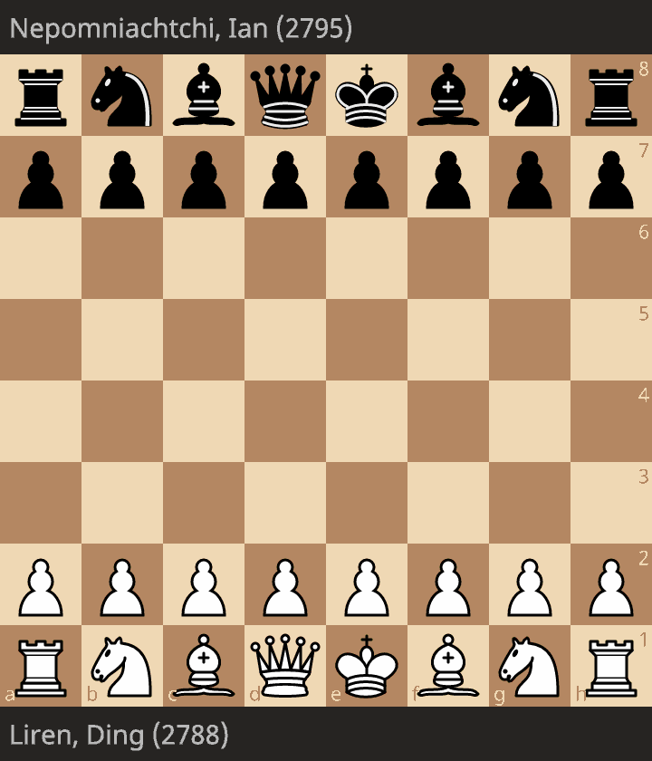
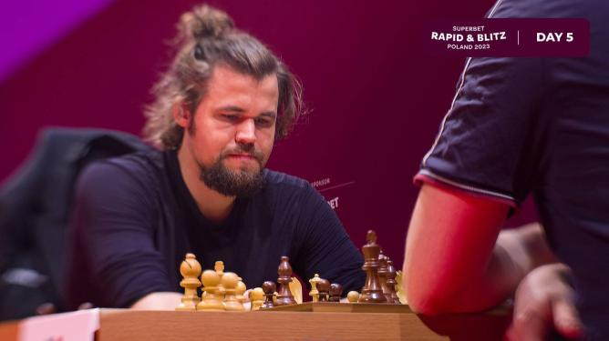

Actualités
Récemment, le monde des échecs a été témoin d'un événement historique : le premier Chinois de l'histoire à remporter le titre de Champion du Monde. La compétition s'est déroulée sur plusieurs jours et a consisté en 18 parties. Finalement, Ding Liren, représentant chinois, a triomphé lors de la 18e et dernière partie face à son adversaire Ian Nepomniachtchi, représentant russe.
Ding Liren contre Ian Nepomniachtchi
Lors de la quatrième partie palpitante des championnats du monde opposant Ding Liren à Ian Nepomniachtchi, les deux grands maîtres ont démontré leur excellence et leur détermination. La partie s'est déroulée dans une atmosphère tendue, chaque coup étant minutieusement calculé pour obtenir un avantage décisif.
Vous pouvez retrouver la partie opposant Ding à Nepo via ce gif, Illustrant la tension constante entre les deux joueurs pendant l'entièreté des 18 matchs les opposants

Magnus inarrêtable en Pologne
Lors du dernier tournois en Pologne, Magnus remporte la victoire. Le Tournois se déroulait dans un format blitz, soit des parties avec un temps limité court. Carlsen ne concédera qu'une seule défaite sur un total de 18 parties jouées. Il est revenu à la compétition en faisant un retour fracassant.
